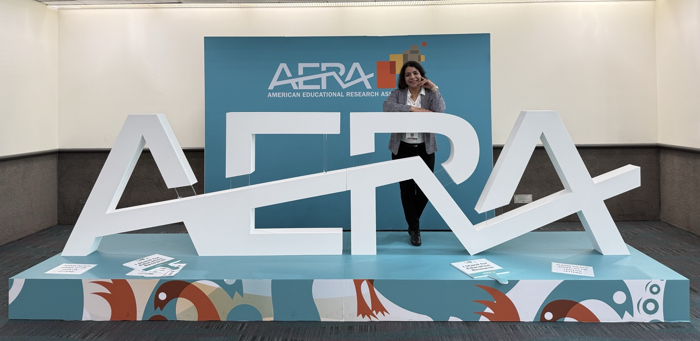

Scholarship
Research & Publications
My research explores AI and educational technology through an equity lens: who gets included, who gets left out, and how design choices can change that.
Google Scholar profileRecent highlight

Unforgetting digital exclusions
I presented a critical framework for inclusive EdTech futures at the American Educational Research Association Annual Meeting in April 2026.
Peer-reviewed articles
Maleki, E., Chen, L.-T., Vijayakumar, T. M., Asumah, H., Tretheway, P., Liu, L., Fu, Y., & Chu, P. (2024). AI-generated and YouTube videos on navigating the U.S. healthcare systems: Evaluation and reflection. International Journal of Technology in Teaching and Learning, 20(1), 40–72.
Kaneshige, N., Abe, S., Maleki, E., & Teye, E. (2025). Enhancing elementary school English education: A case study on ICT-based teacher training. Osaka Shoin Women's University, 9–13.
Conference papers & presentations
Maleki, E. (2026, April). Unforgetting digital exclusions: A critical framework for inclusive EdTech futures. AERA Annual Meeting, Los Angeles, CA.
Maleki, E., & Wiest, L. (2026). Assessing AI-generated online discussion assignments in an asynchronous bioethics course: A comparative analysis of AI vs. human. SITE International Conference (pp. 815–824), Philadelphia, PA. Read paper
Abe, A., Chen, L. T., Maleki, E., Teye, E., Motohashi, S., & Kadowaki, Y. (2025). Integrating AI in foreign language assessment: Practicality and validity in university-level Japanese education. SITE International Conference (pp. 3367–3375), Orlando, FL. Read paper
Maleki, E., & Jangjoo, S. (2024, November). Unlocking knowledge potential: The role of IT infrastructure capabilities in Iranian NGOs' knowledge management practices. ARNOVA Annual Conference, Washington, DC.
Work in progress
Bridging the digital divide in EFL
Evaluating a multimedia CAPT tool for inclusive and accessible pronunciation instruction. (Under review)
Inclusion & belonging online
Students' sense of inclusion and belonging in online asynchronous college courses.
Teaching DEI content online
Issues, challenges, and recommendations for teaching DEI in asynchronous graduate courses.
Patent in progress
An educational technology tool for equitable and accessible language learning.
Research experience
Research Assistant
Aug 2025 – PresentDepartment of Education, University of Nevada, Reno
- Research on inclusive online classrooms: IRB applications, surveys, participant screening, literature reviews.
- Collaborate on focus groups and interviews for data collection.
Research Collaborator: AI & Rhetorical Offloading
Nov 2024 – May 2025Department of English, UNR · PI: Dr. Katrina Miller
- Developed and tested a survey on student and instructor perspectives on AI use.
- Prepared the IRB application, methodology, and literature review.
Research Collaborator: STEM Education Proposal
June 2024Desert Research Institute, SMART Lab · PI: Dr. Farnaz Hosseinpour
- Collaborated on a grant proposal for equity-focused STEM education programs in Northwestern Nevada.
Research Mentorship Program
Aug 2023 – June 2024Department of Education, UNR
- Investigated differences between AI-generated and human-developed courses.
Research Collaborator: Social Robots in Museums
Nov 2022 – Feb 2023Department of Computer Science, UNR · PI: Dr. David Feil-Seifer
- Verified interview transcriptions and organized qualitative data.
Educational Software Designer
2011 – 2014Independent
- Partnered with a developer to build an EFL pronunciation program, testing platform, and grading software.
- Designed instructional content and contributed to coding and iterative UX improvements.